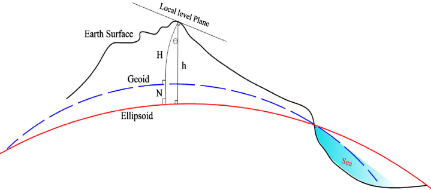
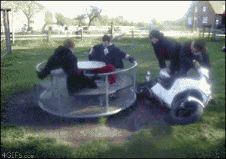

Steps of Abstraction
Flattening the Blue Marble
This is what earth looks like when you take a picture of it from 29,000 kilometers away.
- This photo is called the Blue Marble, it was taken from Apollo 17

Flattening the Blue Marble
This is the version that was published.
- NASA rotated the image 180 degrees to fit peoples expectations

Complexities of Earth
A lumpy ball of rock flying through space.
- Despite what you may have been told
- The earth isn't round!
- It has multiple distortions caused by:
- Topography
- Gravity Differentials
- Centrifugal Force

Our Infinitely Complex Earth
Cartographers have developed strategies for dealing with these distortions:
- Topography
- Gravity Differentials
- Centrifugal Force
Ignore Topography!?
Topography is very localized, in most applications it isn't explicitly needed to make a map.
- We can account after the fact if needed
- Digital Elevation Models

DEM of Mt. Everest
Ignore Topography!?
Topography is very localized, in most applications it isn't explicitly needed to make a map.
- We can account after the fact if needed
- Digital Elevation Models
- Contour Lines
Contour lines, Golden Ears Trail
The Geoid
A simplified model of the Earth that ignores elevation differences due to topography.
- Earths crust is not uniformly dense, causes gravity differentials to form.
- Differences in density cause the surface to "sink" down or "float" up
- Continental scale undulations, +85 m (Iceland) to −106 m (southern India)
Vertical scale exaggerated to show gravity induced elevation differences.
The Geoid
A simplified model of the Earth that ignores elevation differences due to topography.
- Gravity differences measured by satellites 
The Geoid without vertical exaggeration.
TopHat Question 1
The Geoid accounts for elevation differences in the Earth's crust due to
- Topography
- Centrifugal force
- Density differences
- All of the above
The Oblate Spheroid
A fairly close approximation of Earth's shape.
- Due to Centrifugal Force the earth is ~ 26 km wider at the equator 
Datums
Measuring distance/height requires a reference point.
- A Datum is the reference system we to do the fitting
- Gives meaning to numbers/coordinates
Datums
Fitting a spheroid to the geoid allows us to minimize elevation differences due to density differentials and account for effects of Centrifugal force, while ignoring topography.
- A Datum is the reference system we to do the fitting
- Can be Global or Local

Datums give us a reference point to account for distortions
Global Datums
The center of the earth is used as the reference point.
- Fits the geoid fairly well everywhere


Local Datums
A point on the geoids surface is used as the reference point.
- Fits geoid very well in one region


Does the Datum Matter?
Generally speaking:
- For global maps, you always need a global datum
- A local datum is better for small areas like a city
- Global datums can be used, they just might shift things a bit
Does the Datum Matter?
Only minor differences between local and global datums in North America.
- For most applications ...
- The choice of global vs. local is not really that important
- For others, its very important
- Aviation
- Self driving cars

TopHat Question 2
A _____ datum is fixed to the center of the geoid while a _____ datum is fixed to a point on the geoid's surface.
Geographic Coordinate System
Latitude/Longitude is the primary Geographic Coordinate System (GSC) that we use to describe locations on the "the earth's surface"
- Location on a 3D object with just 2 numbers
- Fixed to the surface of spheroid
- Not the actual earth's surface

Latitude
Distance in degrees form Equator:
- Angular distance between center of the earth and the equator
- -90°(South) to +90°(North)
- Often called parallels

Longitude
Distance in degrees form the Prime Meridian:
- Angular distance between center of the earth and the prime meridian
- -180° (West); to +180° (East)
- Often called meridians
Latitude & Longitude
Sometimes refereed to as a graticule.
Degrees Minutes Seconds
- Vancouver BC: 49°15′40″N 123°06′50″W
- Sydney NSW: 33°51′54″S 151°12′34″E
Decimal Degrees
- Vancouver BC: 49.261111, -123.113889
- Sydney NSW: -33.865, 151.209444
An Important Caveat!
Meridians converge at the poles!
- Distance between degrees of longitude decreases with increasing latitude
- This is the central issue with projecting a map!
- You can't accurately display a Geographic Coordinate System on a 2D surface (map/screen).

Making a Flat Map
Displaying Lat/Lon in 2D doesn't work well
- Causes things to look "scrunched"

We have to Project our map.
- Involves intentionally distorting the data to display it effectively in 2D

TopHat Question 3
Lines of latitude converge at the poles.
- True
- False
Projected Coordinate Systems
A map projection is a mathematical transformation used to flatten a GCS.
- Imagine sending rays of light through the ellipsoid onto a flat surface, the resulting image is a projection

Making a Flat Map
Applying a projection:
- Converts to linear units
- Allows distance/area calculations
- Makes things look better

TopHat Question 4
A Geographic Coordinate System is a mathematical transformation we apply to project the earth on a 2D plane.
- True
- False
Steps of Abstraction